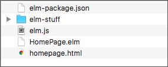
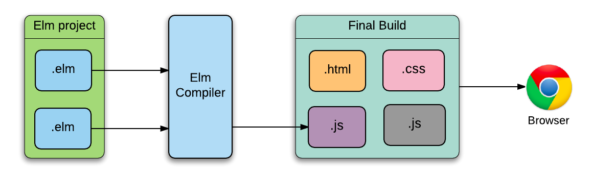
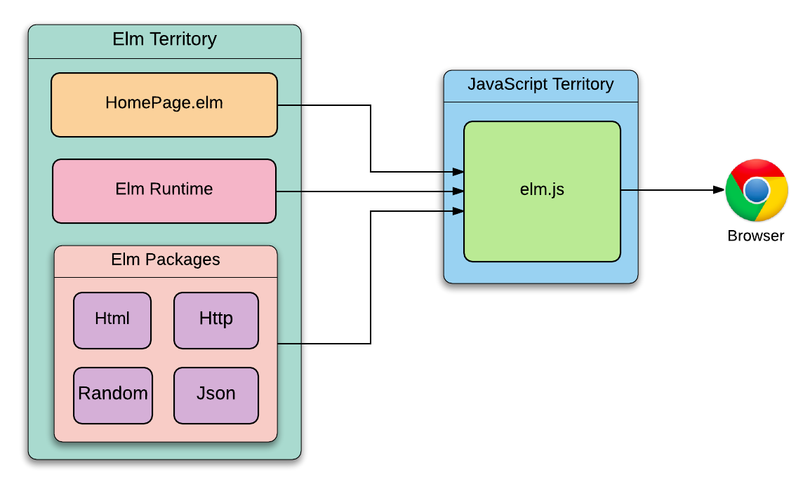
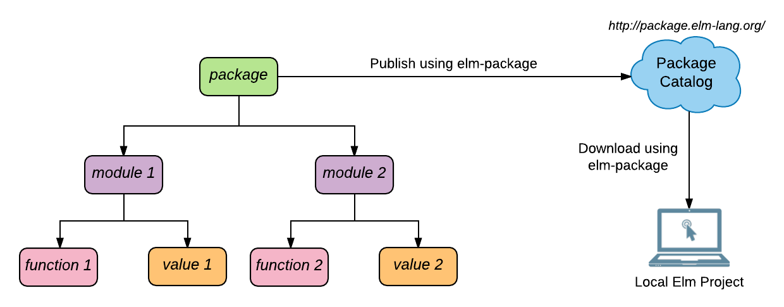
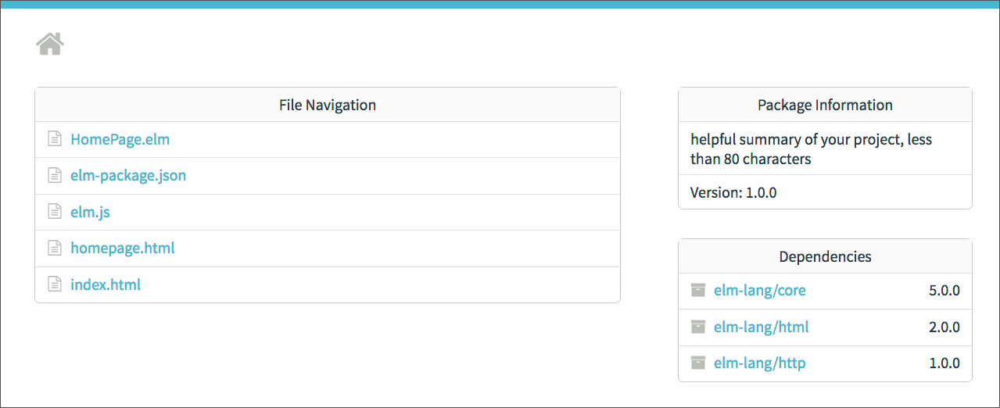
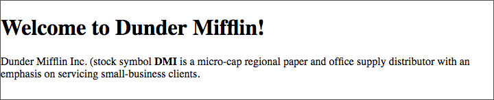
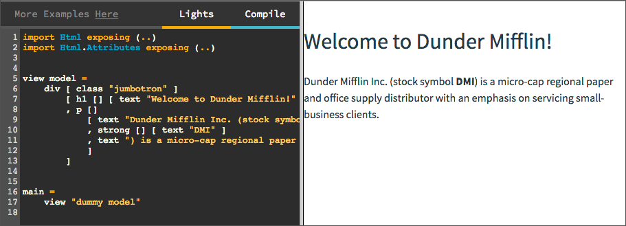

Instalace
Než začneme, potřebujeme si instalovat a konfigurovat několik nástrojů, nezbytných pro práci s jazykem Elm.
Instalace Node.js
Node.js je běhové (runtime) prostření JavaScriptu pro vytváření většinou serverových webových aplikací.
Tato celá kniha popisuje jazyk pro vytváření klientských webových aplikací. Proč potřebujeme instalovat Node.js? Potřebujeme jej ze dvou důvodů:
- elm-repl - nástroj, který budeme používat k experimentování s jazykem Elm - kompiluje kód Elmu do JavaScriptu. Node.js poskytuje prostředí pro běh tohoto JS kódu.
- Součástí Node.js je správce paketů, zvaný NPM (Node.js Package Manager). Většína nástrojů a knihoven pro vytváření "front-end" aplikací je distribuována jako pakety NPM. V této knize nebudeme NPM používat příliš často ale jako produktivní programátor jej potřebujete mít ve svém arzenálu.
Při instalaci Node.js ve svém počítači se řiďte instrukcemi oficiálního sajtu. Protože je NPM součástí Node.js, nepotřebujete jej zvlášť instalovat. Pro ověření, že máte Node.js 4.0 či vyšší nainstalovaný, zadejte odkudkoli tento příkaz v terminálu:
node --versionInstalace Elm Platform
Elm Platform zahrnuje všechny nástroje, potřebné pro práci s Elm. Při instalaci Elm Platform následujte instrukce, uvedené na oficiálním sajtu. Potom si ověřte správnost instalace příkazem v terminálu:
elm --versionMělo by se ukázat číslo instalované verze, což je aktuálně 0.18.0.
Editor zdrojového kódu
Při studiu této knihy budete psát mnoho zdrojového kódu. Některý z těchto kódů bude realizován uvnitř terminálu v aplikaci elm-repl. Některé kódy budou uloženy do souboru a kompilovány. Elm nemá vlastní editor zdrojového kódu. Je tedy na vás, který editor si zvolíte. Většina editorů nepodporuje užitečné vlastnosti jako je zvýraznění syntaxe a automatické dokončování zápisů.
Pokud se spokojíte zvýrazňováním párových závorek, je Notepad++ vaše správná volba. Jinak si můžete pro osm vybraných editorů nainstalovat pluginy podle odkazů v oficiální dokumentaci Elmu Configure Your Editor.
Protože znaky tabulátoru generují v Elmu syntaktické chyby, nezapomeňte nastavit editor tak, aby při stisku tabulátoru vkládal mezery.
Aplikace elm-format
Kompilátor akceptuje jakýkoli platný program ale rozsáhlá komunita Elmu preferuje programy, psané určitým stylem. U většiny jakyků si můsíme stylové požadavky pamatovat a přičinlivě je následovat. Nejen že to zabírá určité místo v naší paměti ale také nás to rozptyluje při řešení problémů.
Aplikace elm-format se snaží tento problém řešit automatickým formátovaním našeho kódu podle souboru pravidel, standardizovaných komunitou. I když nemusíte, vřele vám instalaci elm-format doporučuji.
- elm-format Release Status
- As of this writing,
elm-formatis still in alpha. Don’t be surprised if the current format of your program looks different from the one 1.0.0 version ofelm-formatproduces in the future. Despite its alpha status, most community members are already using it. So you should be fine using it too. All code in the book that is meant to be saved in a file has been formatted usingelm-format.
Na rozdíl od Elm Platformy, není elm-format expedován s instalátorem. Tým jeho vývojářů naznačil, že jednoduchá možnost instalace bude k disposici u stabilní verze. Do té doby musíme zprovoznění aplikace věnovat trochu více pozornosti.
Krok 1: V sekci installation si stáhněte vhodnou verzi pro váš operační systém a rozbalte ji. Potřebujete aby byla kompatibilní s Elm 0.18.
Krok 2: Abyste mohli elm-format spouštět v teminálu z kteréhokoli diskového oddílu, přidejte jeho lokaci do proměnné PATH.
- Proměnná PATH
- PATH je proměnná prostředí, která uvádí cestu k adresáři, v němž je spustitelný program umístěn. Takovýto program lze v terminálu spouštět bez zadávání cesty k souboru.
Nejlepší způsob přidání aplikace elm-format do proměnné PATH je nakopírovat ji do adresáře, který obsahuje program elm. Instalátor Elm Platformy vloží programový soubor elm do adresáře, který je již vložen do proměnné PATH. Takže kopírování elm-format do stejného adresáře umožní jeho spuštění odkudkoli v terminálu. V Unixu si můžete vytisknout úplnou cestu k programu elm spuštěním následujcího příkazu v terminálu:
which elm
/usr/local/bin/elmVe Windows dosáhnete téhož spuštěním následujcího příkazu: where elm.
Krok 3: Pohleďme na elm-format v akci. Vytvořte nový adresář s názvem beginning-elm. Kde tento adresář vytvoříte není důležité. V adresáři vytvořte rovněž soubor a vložte do něho následující kód:
module Main exposing (..)
import Html exposing (beginnerProgram, div, button, text)
import Html.Events exposing (onClick)
main =
beginnerProgram {
model = 0, view = view, update = update
}
view model =
div []
[ button [onClick Decrement] [text "-"]
, div [] [text (toString model)]
, button [onClick Increment] [text "+"]
]
type Msg = Increment | Decrement
update msg model =
case msg of
Increment -> model + 1
Decrement -> model - 1Neznepokojujte se, pokud výše uvedenému kódu rozumíte málo nebo vůbec ne. Na konci knihy budete schopen porozumět mnohem složitějšímu kódu.
I když je uvedený kód platný pro Elm, není příliš konformní se zavedeným souborem doporučení pro úpravu kódu, zvaným style guide. K nápravě použijme aplikaci elm-format. Přejděte do adresáře beginning-elm a v terminálu realizujte tento příkaz:
elm-format TestElmFormat.elmUvidíte následující varování:
This will overwrite the following files to use Elm's preferred style:
TestElmFormat.elm
This cannot be undone! Make sure to back up these files before proceeding.
Are you sure you want to overwrite these files with formatted versions? (y/n)Odpovězte y. Když se nyní podíváte do souboru TestElmFormat.elm, uvidíte že elm-format náš kód pěkně zformátovál:
module Main exposing (..)
import Html exposing (beginnerProgram, div, button, text)
import Html.Events exposing (onClick)
main =
beginnerProgram
{ model = 0
, view = view
, update = update
}
view model =
div []
[ button [ onClick Decrement ] [ text "-" ]
, div [] [ text (toString model) ]
, button [ onClick Increment ] [ text "+" ]
]
type Msg
= Increment
| Decrement
update msg model =
case msg of
Increment ->
model + 1
Decrement ->
model - 1Chcete-li obejít varování, spusťte elm-format s návěstím --yes.
elm-format TestElmFormat.elm --yesSoubor TestElmFormat.elm již nebudeme potřebovat, takže jej můžete smazat.
Krok 4: Spouštění aplikace elm-format při každé změně zdrojového souboru může být únavné. Z toho důvodů většina editorů kódu disponuje pluginem, aktivovaným při každém uložení souboru s příponou .elm. Instalujte si plugin pro svůj editor ze specializovaného sajtu. Některé pluginy vyžadují aktivaci volby format on save. Nezapomeňte si přečíst příslušné instrukce.
Vytvoření webové stránky
Získejme určité ponětí o programování v Elm ještě předtím, než budeme do této problematiky řádně uvedeni. Vytvoříme jednoduchou webovou stránku, nejprve s použitím HTML a CSS. Později tutéž stránku přestavíme pomocí Elm abychom viděli rozdíl mezi oběma přístupy.
Vytvoření jednoduché stránky s HTML
Vytvořte soubor homepage.html uvnitř adresáře beginning-elm, který jsme vytvořili v sekci Instalace a vložte do něho následující text:
<!DOCTYPE html>
<html>
<head>
<link rel="stylesheet" href="https://maxcdn.bootstrapcdn.com/bootstrap/3.3.7/css/bootstrap.min.css">
<style>
.jumbotron {
background-color: #e6ffe6;
text-align: center;
}
</style>
</head>
<body>
<div class="jumbotron">
<h1>Welcome to Dunder Mifflin!</h1>
<p>
Dunder Mifflin Inc. (stock symbol <strong>DMI</strong>) is
a micro-cap regional paper and office supply distributor with
an emphasis on servicing small-business clients.
</p>
</div>
</body>
</html>Je to jednoduchá webová stránka s pozdravem a krátkým popisem jedné z našich oblíbených společností. Stránka je stylově upravena CSS frameworkem Bootstrap. Rovněž obsahuje řádkovou stylyzaci (inline style).
Nebuďte znepokojeni, pokud neznáte "Bootstrap". Používáme jej zde k menšímu vylepšení vzhledu stránky. Později nám poslouží jako příklad načtení externího frameworku CSS pomocí Elm.
Otevřte soubor homepage.html v prohlížeči. Měl by vypadat nějak takto:
Následně přestavíme domovskou stránku pro Dunder Mifflin pomocí Elm.
Vytvoření jednoduché stránky prostřednictvím Elm
Vytvořte soubor HomePage.elm v adresáři beginning-elm a vložte do něho následující kód:
module BeginningElm exposing (..)
import Html exposing (..)
import Html.Attributes exposing (..)
view model =
div [ class "jumbotron" ]
[ h1 [] [ text "Welcome to Dunder Mifflin!" ]
, p []
[ text "Dunder Mifflin Inc. (stock symbol "
, strong [] [ text "DMI" ]
, text ") is a micro-cap regional paper and office supply distributor with an emphasis on servicing small-business clients."
]
]
main =
view "dummy model"Neznepokojujte se tím, že nerozumíte výše uvedenému kódu. Jak pracují aplikace Elm si vysvětlíme podrobně později. Vše, co tento kód dělá, je to, že vytváří tutéž domovskou stránku, kterou jsme vytvořili pomocí HTML a CSS výše. Spusťte následující příkaz z terminálu v adresáři beginning-elm za účelem kompilace souboru HomePage.elm na JavaScript.
elm-make HomePage.elm --output elm.jsVýstupní soubor se nemusí jmenovat elm.js. Můžete jej pojmenovat jinak ale nezapomeňte rovněž změnit jméno v souvisícím HTML souboru.
Elm vás bude žádat o svolení k instalaci několika paketů. Odpovězte "y". Jakmile Elm nainstaluje pakety a kompiluje zdrojový kód, vytvoří několik nových souborů a adresář uvnitř adresáře beginning-elm.

elm-package.json - Elm používá tento soubor k uložení metadat o projektu a o jeho dependencích (závislostech).
elm-stuff - Uložiště artefaktů, vytvořených poté, co elm-make zkompiloval náš kód, včetně paketů, na nichž náš projekt závisí.
elm.js - JavaScriptový soubor, který obsahuje kompilovaný kód.
Vytvořte další soubor, zvaný index.html uvnitř adresáře beginning-elm a vložte do něho následující kód:
<!DOCTYPE html>
<html>
<head>
<link rel="stylesheet" href="https://maxcdn.bootstrapcdn.com/bootstrap/3.3.7/css/bootstrap.min.css">
<style>
.jumbotron {
background-color: #e6ffe6;
text-align: center;
}
</style>
</head>
<body>
<div id="elm-code-is-loaded-here"></div>
<script src="elm.js"></script>
<script>
Elm.BeginningElm.embed(document.getElementById("elm-code-is-loaded-here"));
</script>
</body>
</html>Kód uvnitř části <head> je přesně tentýž jako předtím. Část <body> ovšem vypadá odlišně. Vytvořili jsme element div a vložili do něho selektor id. Potom jsme uvedli odkaz na soubor elm.js, který byl generován jako výstup dříve spuštěného příkazu: elm-make HomePage.elm --output elm.js. Tento příkaz kompiloval náš kód v Elm a vkložil jej do souboru elm.js. Nakonec jsme použili funkci Elm.BeginningElm.embed k načtení naší aplikace do elementu elm-code-is-loaded-here.
Netrapte se, pokud vám právě říkané nedává mnoho smyslu. Mechanizmus vytvoření a vložení Elmové aplikace si podrobně popíšeme později.
Otevřte soubor index.html v prohlížeči. Měl by vypadat stejně jako ten, vytvořený v HTML a CSS. Vytvoření jednoduché webové stránky Elmem vyžadovalo poněkud více úsilí než pouhým HTML a CSS. Pokud vše, co vytváříte, je několik statických stránek, potom patrně není Elm tím pravým nástrojem. Potřebujete-li však tvořit vysoce interaktivní webobé aplikace, které se časem budou zvětšovat a budou složitější, potom je Elm pro tento účel fantastickým nástrojem.
Zbytek této knihy je věnován osvětlování programovacího jazyka Elm a poučení o tom, kterak nám jeho architektura pomáhá vytvářet neuvěřitelně robustní front-webové aplikace.
Platforma Elm
V předchozí sekci jsme instalovali Elm Platform, která spojuje dohromady všechny nástroje, potřebné pro práci s Elmem. V této sekci si stručně tyto nástroje probereme. Jak se budete prodírat jednotlivými odstavci této knihy, budete získávat více vhledu do jednotlivých témat.
Také si všimněte, že v celé knize budeme používat termín Elm s odlišným významem. V závislosti na kontextu může tento termín znamenat kterýkoliv z následujících označení:
- Programovací jazyk Elm
- Architektura Elmu
- Kompilátor Elmu
- Runtime Elmu
Není chybou, označíme-li je kolektivně jako Elm ale je důležité abychom věděli, co ve skutečnosti znamenají. V následující sekci se pokusíme chápat, co každý z těchto temnínů znamená.
Programovací jazyk Elm
Programovací jazyk Elm se používá k psaní programů, které běží ve webovém prohlížeči. Popis jazyka je rozdělen do dvou částí: syntaxe a sémantika. Syntaxe popisuje gramatickou strukturu programu, zatímco sémantika se vztahuje na jeho význam. Například, následující kód je syntakticky neplatný, protože operátor +++ v jazyce Elm neexistuje.
"syntactically invalid " +++ "code"Existuje nesčetně případů, kdy Elm může vrátit hlášení o syntaktické chybě: špatně použité klíčové slovo, dva operátory za sebou, nepárné závorky, etc.
Poté, co je ustavena syntaktická platnost programu, je čas na hledání sémantických chyb. Následující kód je například syntakticky platný ale sémanticky neplatný. Označení ++ je platným operátorem v Elmu ale může být použit pouze ke spojení dvou řetězců, nikoliv řetězce a čísla.
"syntactically valid, but semantically invalid " ++ 45Platný program v Elmu musí být platný jak syntakticky, tak sémanticky.
Programovací jazyk Elm je psán v programovacím jazyku Haskell. Náš sklon, vytvářet věci, které nám umožní vytvářet jiné věci, jež zase jsou použity k vytváření dalších věcí, je docela fascinující.
Kompilátor Elmu
Kompilátor Elmu je program, který transformuje kód, psaný v programovacím jazyku Elm na programovací jazyk JavaScript.

Všimněte si dvou JavaScriptových souborů v pravém dvorci nahoře. Obecně přijímá Elm v projektu víceré soubory .elm a kompiluje je do jediného souboru .js. Proč tedy můžeme mít více souborů .js ve finální sestavě? Kód pro naší aplikaci nemusí být stoprocentně psán v jazyce Elm. Tato vlastnost je užitečná při zavádění Elmu do existujícího projektu. Můžete si vybrat méně riskantní část aplikace a napsat ji v Elmu. Přičemž se s Elmem seznámíte a můžete se později rozhodnout, co uděláte se zbývající částí. Zda ji rovněž přepíšete do Elmu nebo ponecháte v původním (kompatibilním) jazyce.
Elm je navržen pro vytváření spolehlivých webových aplikací, které běží v prohlížeči, jež ovšem rozumí pouze JavaScriptu, do něhož musí být zdrojový kód v Elmu kompilován. Ovšem, pokud se někdy v budoucnosti přesune Web od JavaScriptu k něčemu jinému, bude muset být Elm kompilován k tomuto "jinému".
V současné době nemůžeme v Elmu vytvářet serverové aplikace. Možná, že to někdy bude možné; v tom případě bude muset být Elm kompilován do více cílových jazyků.
Architektura Elmu
Architektura Elmu je sada vzorů a jazykových vlastností pro správu toku dat v programu. Ve vysoce interaktivní aplikaci tečou data různými komponenty. Výsledná interakce mezi těmito komponentami může být docela složitá. Architektura Elmu tuto složitost redukuje použitím několika velice chytrých technik. V čem tyto techniky spočívají se podrobněji seznámíme v kapitole 5.
Přicházíte-li k Elmu z jiných jazyků, jako je JavaScript, Ruby nebo Python, všimnete si, že v Elmu neexistuje separátní framework pro vytváření aplikací. Je to proto, že Elm Architecture je součástí vlastního jazyka. Jakékoli další procedury (features), nepřítomné v jádru jazyka, mohou být přidány do vašeho repertoáru jednoduchou instalací paketu z rozsáhlé kolekce paketů, Elmem nabízených. Většina z těchto paketů je navržena spíše pro provádění specifického úkolu jako je např. výběr dat z HTTP serveru, než poskytování klenutého frameworku pro vytváření složitých aplikací. Z těchto důvodů je Elm nejenom alternativou k JavaScriptu ale také k frameworkům, jako je React nebo Angular.
Runtime Elmu
Elm runtime je systém, podporující provádění programů, psaných v programovacím jazyku Elm. Tento runtime je částí toho, co číní Elm tak mocným. Je to kód, který Elm realizuje "za scénou", takže můžeme psát programy, popisující to, čeho chceme dosáhnout bez starosti o to, jak jej Elm provede. Můžete to vidět v akci při pohledu na výstup příkazu, který jsme zadávali:
elm-make HomePage.elm --output elm.jsPožádali jsme kompilátor Elmu aby kompiloval kód v našem souboru HomePage.elm do JavaScriptu (elm.js).
elm-make
je stavební nástroj, který za scénou používá kompilátor Elmu. Více o tomto nástroji později.
Nahlédnete-li do souboru elm.js, zjistíte, že obsahuje tisíce řádků JavaScriptového kódu. Ale moment - my jsme nenapsali tuny kódu v Elmu pro vytvoření naší jednoduché webové stránky. Bylo to sotva patnáct řádků. Co se tu děje?
Tady právě přichází ke slovu runtime Elmu. Soubor elm.js obsahuje nejen kód, který jsme napsali ale také celý runtime Elmu a všechny ostatní pakety, které jsme instalovali. Browser rozumí pouze JavaScriptu, takže do něj musí být transformován kód v Elmu, včetně kódu pro runtime samotný. Uživatelé naší aplikace ani nepoznají, že byl Elm použit k jejímu vytvoření.

Abychom pochopili, jak vytvářet složité aplikace v Elmu, není vůbec zapotřebí, abychom se zabývali kódem uvnitř runtime Elmu. To je jeden z důvodů, proč je Elm takový snadný jazyk; jeho tvůrci vykonali mnoho těžké práce za nás. My pouze stavíme na všech těch udělátkách, které jsou pro nás v runtime napsány.
Elm-make
Elm-make je nástroj pro tvorbu projektů. Tento "žentour" přijímá soubory .elm a kompiluje je do JavaScriptu nebo HTML. Při kompilaci do HTML vloží elm-make celý JavaScriptový kód (jenž jsme viděli v souboru elm.js) mezi tagy <script>. Je to nejlepší způsob, jak udržet JavaScriptový kód v odděleném souboru, vzhledem ke snadnosti testování,organizaci kódu a opětovného použití. Doporučuji tedy kompilovat kód Elmu do JavaScriptového souboru (index.html).
elm-make HomePage.elm --output elm.js
OR
elm-make HomePage.elm --output elm.htmlImplicitně tiskne elm-make pouze chyby, nikoliv varování. Chcete-li vidět také varování, spusťte jej s návěstím --warn, jako je toto:
elm-make HomePage.elm --output elm.js --warn
========================== WARNINGS =============================
--------------- missing type annotation ------------ HomePage.elm
Top-level value `main` does not have a type annotation.
17| main =
^^^^
I inferred the type annotation so you can copy it into your code:
main : Html aPokud varovnou zprávu nevidíte, smažte adresář build-artifacts, umístěný v adresáři beginning-elm/elm-stuff a spusťte příkaz znovu.
- Warning
- Varovná zpráva indikuje, že v našem programu může být něco nesprávného. Protože varování nezabrání úspěšné kompilaci programu, nejsme nuceni na varovné zprávy reagovat. Je ale dobrou praxí, tyto idicie osvětlit, jakmile se objeví. Pokud tak nečiníme, je velká pravděpodobnost, že dříve nebo později narazíme na vážnější problém.
- Error
- Chybová zpráva indikuje, že v našem programu určitě je něco závadného. Tyto chyby musíme napravit ještě před kompilací.
Elm package
I když Platforma Elm obsahuje všechny nezbytné nástroje pro práci s Elmem, neobsahuje všechny pakety, dostupné v katalogu Elmu. Tu a tam se může stát, že si potřebujeme nějaký další paket stáhnout a instalovat.
Instalace paketu
Aplikace elm-package je nástroj pro publikování a stahování paketů z online katalogu. Když jsme v předchozím výkladu při vytváření jednoduché domovské stránky, zadali příkaz elm-make, "usoudilo" zázemí Elmu automaticky, že potřebujeme paket elm-lang/html, načež tedy tento paket instalovalo. Tentokrát si stáhneme a instalujeme paket sami. Později v naši knize budeme chtít zadat HTTP požadavek na server ohledně získání nějakých dat. K tomu budeme potřebovat paket elm-lang/http. Instalujme tento paket nyní pro získání představy, jak takový elm-package pracuje. Spusťte v terminálu z adresáře beginning-elm následující příkaz.
elm-package install elm-lang/httpPřed stažením tohoto paketu nás elm-package zdvořile požádá o svolení k přidání tohoto paketu jako dependenci k paketu elm-package.json.
To install elm-lang/http I would like to add the following
dependency to elm-package.json:
"elm-lang/http": "1.0.0 <= v < 2.0.0"
May I add that to elm-package.json for you? [Y/n] yPotvrďte "y" a stiskněnte Enter. Elm-package vás požádá o potrvzení svého plánu instalace. Opět potvrďte "y" a stiskněte Enter.
Some new packages are needed. Here is the upgrade plan.
Install:
elm-lang/http 1.0.0
Do you approve of this plan? [Y/n] y
Starting downloads...
● elm-lang/http 1.0.0
Packages configured successfully!Po úspěšné instalaci je paket vložen do adresáře beginning-elm/elm-stuff/packages.

Všimněte si, že všechny pakety, které jsme dosud instalovali, byly vloženy do adresáře elm-lang. Je to proto, že všechny tyto pakety jsou publikovány organizací elm-lang, která spravuje Elm. Všechny názvy paketů jsou uvedeny uživatelským jménem osoby či organizace, která paket publikuje. Pro každé uživatelské jméno vytvoří Elm samostatný adresář.
Až budete instalovat více paketů, všimnete si, že některé z oficiální paketů jsou uvedeny uživatelským jménem evancz místo elm-lang, například evancz/url-parser. Toto uživatelské jméno patří Evanu Czaplickému, tvůrci Elmu. Evan má tendenci používat toto označení u paketů, které se snaží ještě vylepšit, předtím než je zařadí pod hlavičku oficiální organizace elm-lang.
Existuje celá pletora dalších programátorů a organizací, které publikují výtečné pakety. Na příklad paket NoRedInk/elm-decode-pipeline je publikován společností NoRedInk, která věnuje mnoho času a zdrojů pro rozvoj Elmího ekosystému.
Co je to vlastně paket?
Používám označení paket (package) v celé této kapitole, aniž jsem jej formálně uvedl. Paket v Elmu je kolekce modulů. Modul je kolekce funkcí a jiných hodnot (s nimiž se seznámíme v příští kapitole). Pro tuto chvíli považujme funkce za nejmenší utility, které můžeme v Elmu napsat. Některé z těchto utilit lze použít v různých kontextech. Opakovaně použitelné utility, které provádějí podobné úlohy lze soustředit do jednoho modulu. Moduly, řešící podobné problémy lze soustředit do jednoho paketu. Tyto pakety můžete sdílet s jinými programátory publikováním v online katalogu.

Paket nemusí obsahovat více modulů. Například, paket evancz/url-parser má pouze jeden modul, zvaný UrlParser. Účelem paketu elm-package je práce s pakety. Vložení modulu do paketu usnadňuje jeho sdílení s ostatními prostřednictvím katalogu paketů.
Elm-reactor
Když jsme tvořili jednoduchou webovou stránku v Elmu, vytvořili jsme nejprve soubor s extenzí .elm, do něhož jsme vložili náš kód. Potom jsme jej kompilovali na JavaScript použitím aplikace elm-make. Potom jsme uvedli soubor (elm.js) v souboru index.html pro načtení naší Elmové aplikace v prohlížeči. To bylo mnoho kroků jenom proto abychom viděli výsledek našeho Elmího kódu. Elm poskytuje interaktivní vývojářský nástroj zvaný elm-reactor, jenž nám umožní vidět výsledek našeho kódu ihned. Přejděte v terminálu do adresáře beginning-elm a spusťte tento příkaz: elm-reactor.Měli byste vidět něco jako toto:
elm-reactor
elm-reactor 0.18.0
Listening on http://localhost:8000Elm-reactor vytvořil vývojářský server na portu 8000.
Máte-li na tomto portu spuštěný jiný server, musíte jej zavřít příkazem Ctrl + c z terminálu. Jinak nebude elm-reactor schopen spustit lokální vývojářský server Elmu
Navštívíte-li v prohlížeči http://localhost:8000/, uvidíte obsah našeho kořenového adresáře projektu beginning-elm. Uvidíte také seznam paketů, na nichž náš projekt závisí a metadata projektu obsažená v souboru elm-package.json.

Sekce Package Information ukazuje nějaký generický text. Změňme jej na popis účelu naší aplikace. Změňme hodnotu klíče summary v souboru elm-package.json jak zobrazeno níže:
{
"version": "1.0.0",
"summary": "A sample app for learning web application development with Elm.",
.
.
}Obnovíte-li (refresh) stránku na http://localhost:8000/ měl byste vidět nový popis pod názvem Package Information. Je-li popis delší než 80 znaků, informace o paketu se nezobrazí.
Následně klikněte na odkaz HomePage.elm v sekci File Navigation. Měl byste vidět něco jako toto:

Elm-reactor kompiluje kód v souboru HomePage.elm a zobrazí jej v prohlížeci. Bohužel ne tak pěkně, jako naše originální domovská stránka:
V současnosti nepodporuje elm-reactor načítání externích CSS frameworků, jako je Bootstrap. Má také další omezení. Například postrádá živé znovunačtení - techniku, která automaticky znovunačte stránku při změně výchozího kódu. To vyžaduje, abychom "osvěžovali" stránku ručně pokaždé, když změníme kód, chceme-li vidět výsledek. Kvůli těmto omezením nemusí elm-reactor poskytovat nejlepší vývojářské pohodlí, zejména při tvorbě složitých aplikací, které vyžadují robustní sestavné (build) procesy. Naštěstí existuje více sestavných nástrojů, které jsou mnohem účinnější než elm-reactor. Jedním takovým nástrojem je Webpack. Diskuse o těchto nástrojích je mimo rámec těchto textů. Vzhledem k řečenému je elm-reactor pořád výtečný pro prototypování jednoduchých aplikací a my jej budeme při výkladu používat.
Elm-repl
Elm-repl je nástroj, který nám umožňuje experimentovat s Elmem. Budeme jej rozsáhle používat v další kapitole při seznamování se syntaxí a sémantikou programovacího jazyka Elm. REPL je zkratka sousloví Read Eval Print Loop. Vpodstatě čeká na nějaký náš zápis, který vyhodnotí, vytiskne výsledek a vrátí se k čekání na další kód. Tento cyklus se opakuje donekonečna, dokud toto prostředí neopustíme zadáním Ctrl + d nebo příkazem :exit.
Stejně jako elm-reactordovoluje nám elm-repl zápsat kód Elmu a okamžitě vidět výsledek bez nutnosti ruční kompilace. Rozdíl mezi elm-reactor a elm-repl je ten, že ten první přijímá zdrojový soubor v Elm, kompiluje jej do JavaScriptu a zobrazí jej v prohlížeči, zatímco ten druhý přijímá výrazy Elmu, vyhodnotí je za pochodu a výsledek zobrazí přímo v terminálu. Elm-repl je vhodný pro zkoušení krátkých výrazů při zkoumání jazyka, zatímco elm-reactor je lepší pro zkoušení větších úseků kódu, jež je v repl nepohodlné.
Byť elm-repl pracuje tak, že kompiluje kód Elmu do JavaScriptu, nezobrazuje kompilovaný kód v prohlížeči. Proto pro realizaci tohoto kódu potřebuje alternativní prostředí. Jak bylo vysvětleno v sekci Instalace, toto prostředí poskytuje Node.js.
Používání elm-repl
Přejděte v terminálu do adresáře beginning-elm a zadejte tento příkaz: elm-repl. Měli byste vidět něco jako toto:
elm-repl
---- elm-repl 0.18.0 -----------------------------------------------------------
:help for help, :exit to exit, more at <https://github.com/elm-lang/elm-repl>
--------------------------------------------------------------------------------
>Zde nyní můžeme zapisovat všechny druhy výrazů a zjišťovat, v co se vyhodnotí. Zde je několik příkladů:
> 42 / 7.5
5.6 : Float
> pi
3.141592653589793 : Float
> List.reverse ["Next", "Stop", "Pottersville"]
["Pottersville","Stop","Next"] : List StringVšechny příklady v této knize jsou důkladně testovány v Elm 0.18. Pokud se vám stane, že se výstup liší od zobrazení v knize, zkuste repl restartovat. Někdy to pomůže. Pokud ne, zkuste kontaktovat autora překladu nebo autora textu viz email .
Sajt Try Elm
Někdy se stane, že chcem napsat nějaký kód v Elm a vidět co se stane a to bez instalace Elm Platformy a dalších požadovaných nástrojů. Pro ten účel je vynikající sajt Try Elm. Vyzkoušejme na tomto sajtu náš kód pro domovskou stránku. Zkopírujte vše ze souboru HomePage.elm kromě prvního řádku: module BeginningElm exposing (..) a vlepte to do levé poloviny stránky. Poté stiskněte tlačítko Compile. Na pravé polovině bychom opět měli vidět naši domovskou stránku.

Důvod, proč nemůžeme připojit řádek definující module je ten, že si Try Elm vytváří za scénou vlastní modul. Elm nám nedovolí mít dvě definice modulu v jednom souboru. Moduly se budeme podrobně zabývat v kapitole 4.
Sajt Try Elm je dobrý pro zkoušení jednorázového experimentálního kódu. V současné době neposkytuje robustní prostředí, požadované pro vývoj profesionálních webových aplikací. Doufejme, že jednou bude. Jednou z nejtíživějších věcí pro programátora je nutnost instalovat mraky nástrojů, které jsou neustále ve vzájemném konfliktu, vytvářeje tak pekelné prostředí, s nímž se naše jemná duše nedokáže vypořádat. Pokud bychom mohli stavět pěkné Elmové aplikace přímo v prohlížeči, byli bychom mnohem šťastnější. Doufejme, že takový den jednou přijde.